ᛁ Install
Required
- Minecraft 1.21.1
- NeoForge 21.1 or newer
- Iron's Spells 'n Spellbooks
- Overgeared
Optional
| Patchouli | The in-game guide book |
| Curios API | Forge rings, necklaces and charms |
| TACZ | Forge guns; the Black Lotus pistol |
| Ace's Spell Utils | Occult school and its rune |
| Hazen 'n Stuff | Eldritch school |
| Hazen's library | Cosmic, Radiance and Shadow schools |
Content packs
Runeforged is the engine. What can be forged, the minigame maps and songs, and every awakening come from packs.
- Runeforged Starter Pack: a data pack and a resource pack with the full foundation set for Iron's Spells and the supported mods.
- Your own pack: build one in the Pack Editor, from scratch or on top of the Starter Pack.
- Every world at once: put both packs in Global Packs' folders, or add them to each world.
ᚱ The Path
In the order you'll play it.
-
The Guide Book
Craft a book with an iron ingot. It covers everything on this page, in game. Needs Patchouli.
-
Runesmith Rune
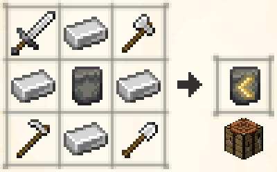
Every key item starts here. A blank rune ringed by iron ingots, with an iron sword, axe, hoe and shovel in the corners. It also aligns gear to the Runesmith school.
-
Runic Hammer
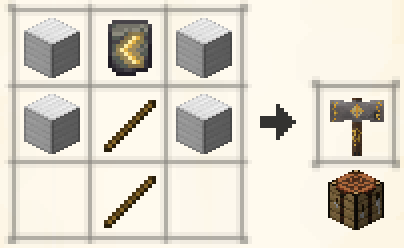
Your tool for every strike. Iron blocks on each side, the Runesmith Rune on top, two sticks down the middle.
The hammer gains mastery as you forge. Its tier caps the quality you can reach (see Mastery).
-
Runic Anvil
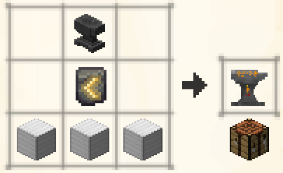
An upgrade of Overgeared's Tier B smithing anvil: the anvil on top, the Runesmith Rune below, three iron blocks at the base.
Work your way up Overgeared's anvils first. Tier B comes from upgrading in the world, not from a recipe.
Configurable: every recipe on this page (datapack).
-
Your First Forge
- Open the anvil. Put in a sword (or any forgeable item) and a blank rune.
- Hold the hammer and right-click the anvil.
- Play the minigame.
- Right-click the anvil to collect the item floating above it.
The item is now runeforged, but it has no school yet.
-
The Forging Minigame
The camera moves beside the anvil and a rune board appears. The server judges every hit: Perfect, Great, Okay or Miss. Your accuracy sets the quality. You get one of three modes:
Rune Forging
Hit each seal as its ring closes. Hold sliders along their track.
See it
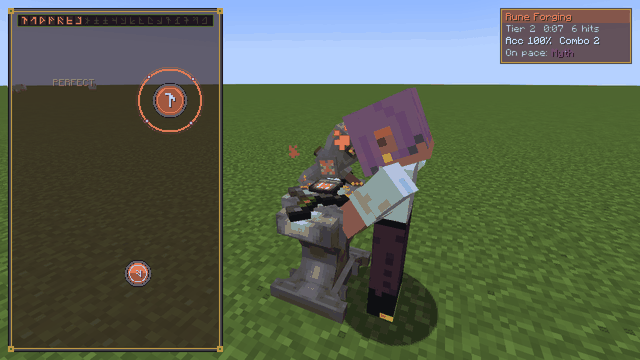
Catch the Rune
Move the bar to catch falling runes. Center catches score higher.
See it
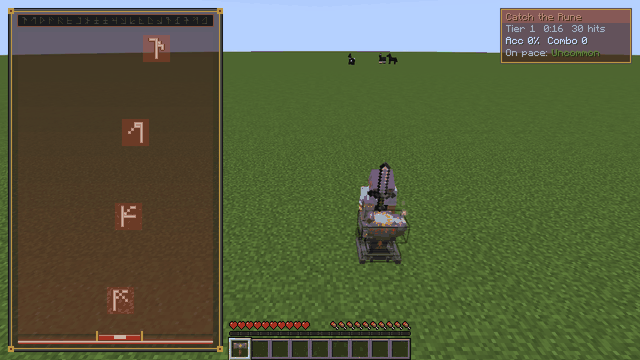
Runic Lanes
Four lanes, notes slide to the line. Hold the long notes. Ghost presses cost accuracy.
See it
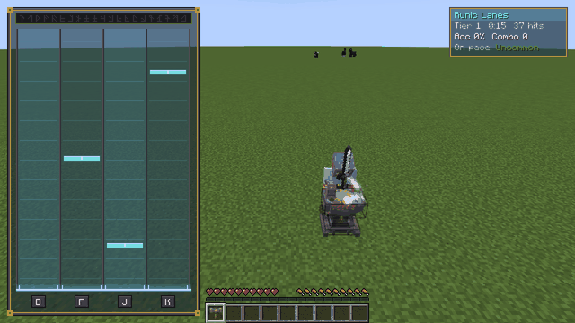
Configurable: songs, charts, modes and grade thresholds (forgemaps, built with the Pack Editor); forge camera and upscroll (client config); every key (Controls).
-
Align to a School
Put the forged item and a school rune (fire, ice and so on) in the anvil, then strike. The item gets school damage and colours, and your mana bar takes the school colour while you hold it.
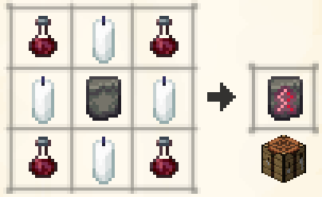
Occult Rune (with Ace's Spell Utils): a blank rune ringed by candles, with a blood vial in each corner.
Add-on schools (Eldritch, Cosmic, Radiance, Shadow) use their own mod's rune. -
Quality and Refine
Grade Start Cap Uncommon +1 +1 Rare +1 +3 Epic +3 +5 Legendary +6 +9 Myth +10 +10 - Refine: strike again with the matching school rune (a protection rune for armour and shields). +1 each time, up to the cap.
- Promote: at the cap, an arcane rune raises the item one grade.
Configurable: damage and resistance gained per refine, for each hammer tier (server config).
-
Hammer Mastery
Tier Points Best grade Novice 0 Uncommon Adept 100 Rare Expert 300 Epic Master 700 Legendary Grandmaster 1500 Myth A perfect forge gives about 100 points. When one school reaches Grandmaster, the hammer specializes in that school.
Configurable: tier point thresholds and points per forge (server config).
-
Runic Manuscripts
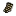
Very rare loot in dungeon and structure chests, from any mod. Each one carries a single attribute.
Put a forged item and the manuscript in the anvil, then strike. You get 1 slot per 2 refine, so Myth +10 gives 5 slots. Manuscripts add to your gear's own stats and never replace them.
Configurable: loot chance (datapack, default 2%); slots per refine (server config); each attribute's value and growth per refine (
iss_runeforged-manuscripts.toml). -
Spell Slots and Curios
- Spell slots: an aligned item, its school rune and the matching upgrade orb, then strike. +1 slot each time, up to the item's refine.
- Curios: forged rings, necklaces and charms give school spell power while worn, and more with each refine.
Configurable: curio spell power per refine (server config).
-
Runic Awakening
A Runesmith spell. Scribe it at the Scroll Forge with Legendary ink and a blank rune; you don't need to learn it first.
Casting it wakes all your forged gear at once. Weapons react on hit, shields on block, armour when you're hit. Keep a matching rune in your off hand.
Abracadabra, an enchantment for armour and shields, casts one of the stored spells when you're hit.
Configurable: what each school's awakening does, its cost and duration (datapack); Abracadabra cooldown (server config).
-
Ego Awakening
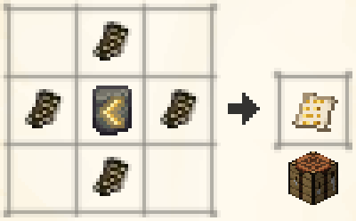
A hidden spell. Craft an Ego Manuscript (four runic manuscripts around a Runesmith Rune) and use it to learn the spell, then scribe it.
Cast it while holding an aligned Myth weapon. The weapon's spirit forms, takes your weapon and matching armour, and fights beside you. You can have up to 3 spirits.
Configurable: mana cost, awakening time, cooldown, recast window, max spirits, chase and return range (server config).
-
The Black Lotus
A TACZ pistol that fires mana instead of ammo, from the separate Black Lotus gun pack. Each shot casts a rune seal that locks on to your target. Spell Slinger mode fires your selected spell instead.
It uses TACZ's own controls: fire, aim, reload, and the fire-mode key to cycle Semi, Charged and Spell Slinger (SS).
The draw
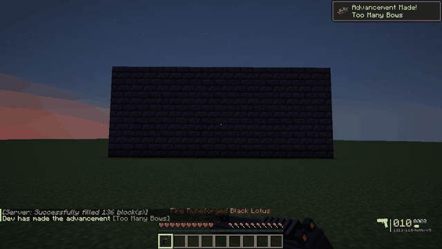
Seal shots
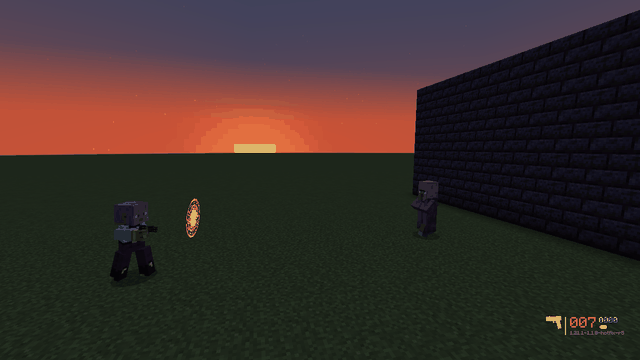
Spell Slinger
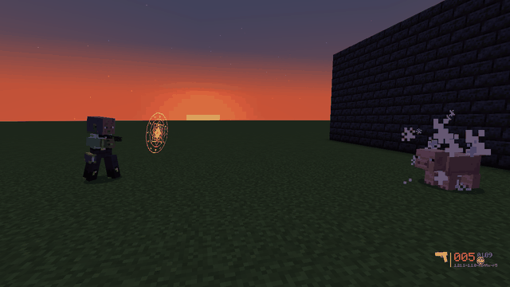
Configurable: mana per shot, flat or % of max mana, per rarity or per gun (
iss_runeforged-gun-mana.toml).
ᚲ Controls
These are only defaults. Rebind any of them in Options › Controls › Key Binds › Runeforged. The minigame keys only work in the minigame, so they don't conflict with movement.
| J / K | Show awakening details / imbued spells (hold over an item) |
| Z X C | Rune Forging: forge seal, support seal, slider |
| A D Shift | Catch the Rune: left, right, dash |
| D F J K | Runic Lanes 1–4 |
| U | Toggle upscroll |
ᛞ Packs & Servers
Pack makers
Almost everything is data-driven, so a datapack can change it. An awakening config in your own pack replaces the Starter Pack's for the same school and behaviour, wherever you put it:
- forgemaps (minigame songs and charts): build them, and the rest of a pack, in the browser with the Pack Editor
- awakening effects
- quality tuning
- recipes
- the manuscript loot chance (
loot_modifiers/runic_manuscript_chest.json, default 2%)
Server owners
The config files are in config/:
- server: mastery points, slots, cooldowns
- Ego Awakening
- client
- manuscripts
- gun mana (
iss_runeforged-gun-mana.toml)
ᛟ Coming Next
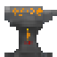
The Dwarven City
A blacksmith city where Runeforged lives. Its smiths will teach forging above today's highest level.
Planned. Not in the current version.
ᛚ Changelog
1.0.0
- Rune forging at the Runic Anvil, with three minigame modes.
- Quality grades, refine, promotion and hammer mastery with school specialization.
- School runes, including Runesmith and Occult.
- Runic Manuscripts as rare chest loot from any mod.
- Runic Awakening, Ego Awakening and Ego Spirits.
- The Black Lotus mana pistol (TACZ).
- Patchouli guide book.
- Content moved to the Runeforged Starter Pack; the mod is the engine.
- Pack Editor exports a data pack and a resource pack, or one plug-and-play mod jar.